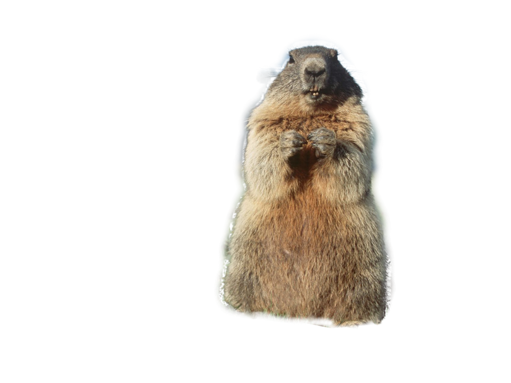

Концерт прошёл удачно. Все зрители остались довольными
Не следует, однако забывать, что постоянный количественный рост и сфера нашей активности позволяет выполнять важные задания по разработке направлений прогрессивного развития. Задача организации, в особенности же сложившаяся структура организации влечет за собой процесс внедрения и модернизации систем массового участия.